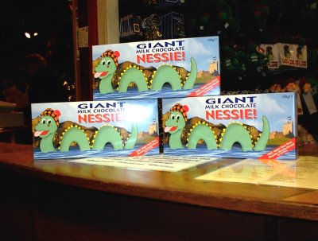

|
The Loch Ness Monster Truly, no body of water outside a Superfund site has been the subject of so much scientific observation, tourism, legend, quackery and plain all-around fraud as the Loch Ness in the hills of Northern Scotland. 23 miles long and an average of 600 feet in depth, it is one of the largest of its type and fed by six separate rivers, eventually becoming the River Ness.This would all be well and good were it not for the persistent legend of a creature, the descriptions of which are almost too varied to recount, who supposedly lives in this body of water, a holdover from prehistoric times and whose visage is as unique as the number of theories as to why it exists. Sightings have been reported since the 1800s, with a new sighting occuring every few years (and occasionally several times in the same year). With each sighting has come another rash of interest in Loch Ness, and "Nessie" (the nickname for the creature) enjoys more publicity. Unlike Bigfoot or the Abominable Snowman, the Loch Ness Monster's direct link to a specific place means that that place has been overrun with quacks, flakes, publicity hounds, tricksters, flim-flam men, and a whole host of pretenders to the throne of "providing proof of the monster". It also means the surrounding area has been trashed beyond belief; portrayals in cartoons of a beautiful, scenic Scottish countryside are a little distanced from the actual place. This isn't to say it's as bad as, say, Anaheim is to Disneyland, but the building of "Nessie Spotting Platforms" and other such structures aren't really helping anything except the personal economy of a few developers. Tourism related to Nessie has been beyond belief, and many crowds show up to spend time around the Loch. Clothing, mementos and literature are presented from all manner of shops and all share one common hope: that the mystery will never be solved. Not to say people haven't tried. As mentioned above, the loch has been hit with sonar, radar, scuba divers, and all manner of scientific equipment, and none have been, as we say, "conclusive". To be conclusive would close a lot of shops. |